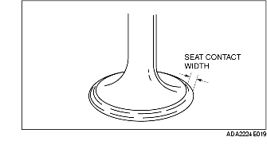
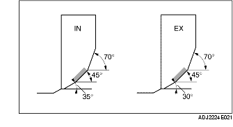
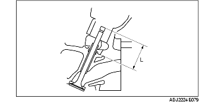

Valve seat inspection/repair
1. Measure the contact width of the valve face and the valve seat using the valve lapping compound (red lead).

-
• If not within the specification, resurface the valve seat using the 45° valve seat cutter or resurface the valve face, or the both.

2. Verify that the valve seating position is at the center of the valve face.
- • If the seating position is too high, correct the valve seat using a 70° (IN) 70° (EX) valve seat cutter, and a 45° valve seat cutter.
- • If the seating position is too low, correct the valve seat using a 35° (IN) 30° (EX) valve seat cutter, and a 45° valve seat cutter.
3. Check the valve seat for sinking. Measure the protruding length (dimension L) of the valve stem using a valve of standard length.
